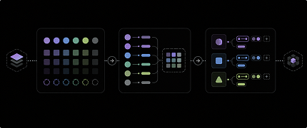

M3 Bridge

Material 3 Token Engine
A Figma plugin designed specifically for Material 3 (M3) files—enabling structured token generation, migration, and system alignment.
What's the problem
Material 3 setups in Figma often remain static—tokens are split across styles and variables, and theme relationships are not preserved. This requires manual mapping and leads to inconsistent implementation.
What this plugin does
Generates, migrates, and structures tokens directly within Figma—aligning Material 3 design with implementation.
Key capabilities
- Generate M3 tokens from seed colors
- Migrate styles into variables
- Consolidate fragmented token systems
- Convert styles → variables
- Generate component-level tokens
What changes
Before
- Static tokens
- Manual mapping
- Fragmented structure
After
- Structured system
- Automated M3 alignment
- Implementation-ready
Output
Structured, alias-aware tokens that are:
- Variable-based
- Mode-compatible
- M3-aligned
- Ready for Flutter
Why it matters
Removes manual setup and ensures tokens are consistent, scalable, and ready for implementation.